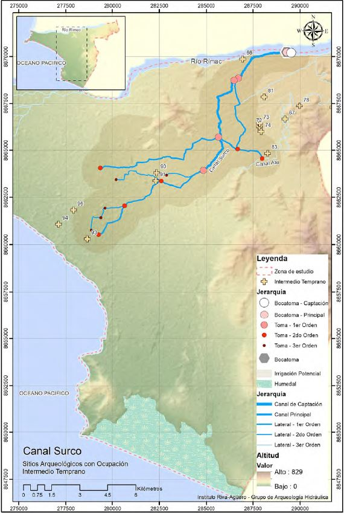
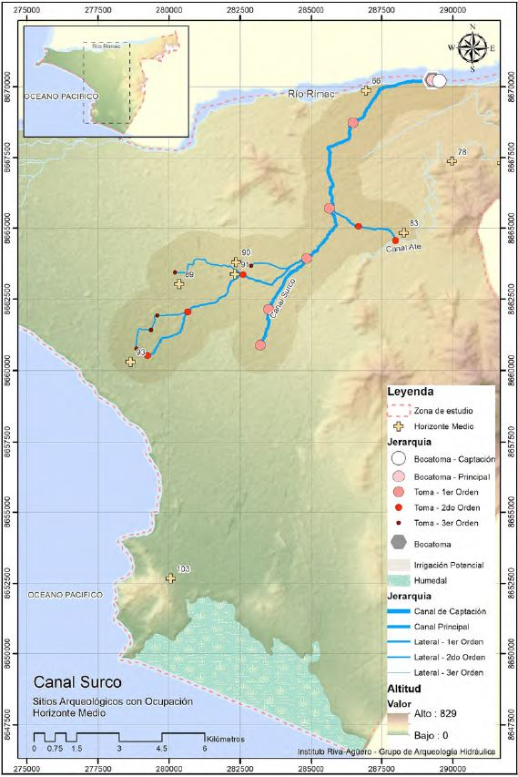
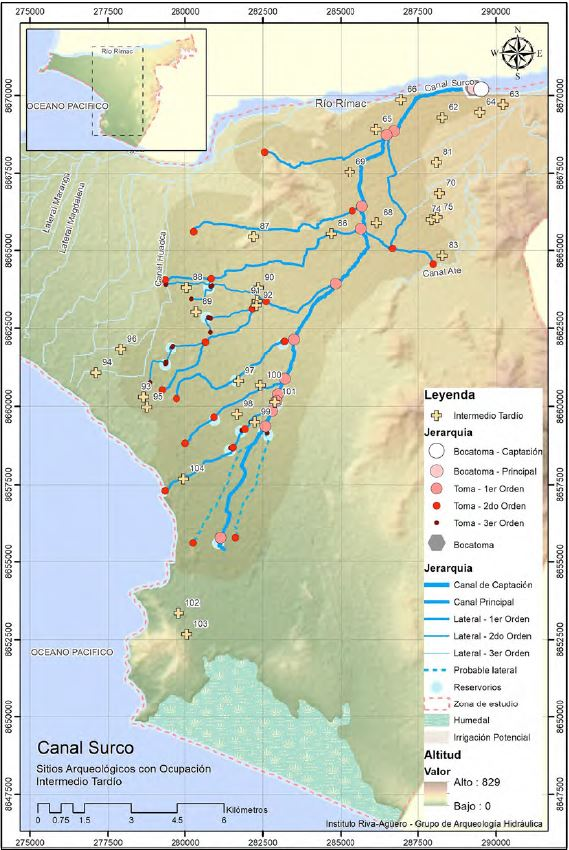

Lima is the second driest biggest city in the world, after El Cairo.
Through the Surco and extensive canal system, water transformed the desert into inhabitable and agricultural land, several centuries ago.
From desert to agriculture fields
In pre-Hispanic Lima, hydraulic infrastructure structured territorial authority. Control over water distribution through the development of this system over the centuries, local curacas such as Taulichusco held power over the territory.

600 - Early Intermediate
1000 - Middle Horizon
1460 - Late IntermediateThe Surco Canal long predates the contemporary city of Lima. Constructed as part of a broader pre-Hispanic hydraulic network, the canal transformed an arid coastal territory into productive agricultural land and structured patterns of settlement, cultivation, and governance across the valley. For centuries, water infrastructure operated as the foundation of urban and territorial life in the desert landscape. By the late nineteenth century, Lima’s urban expansion began to absorb these agricultural landscapes into an increasingly consolidated urban fabric. As new roads, neighborhoods, and infrastructures emerged, the canal persisted within the growing city, gradually shifting from a territorial irrigation system into embedded urban infrastructure.
As Lima expanded throughout the twentieth century, the Surco Canal became increasingly embedded within a dense urban fabric. Agricultural land gradually gave way to roads, housing developments, and metropolitan infrastructure, transforming the spatial and hydraulic conditions of the canal. While the canal continued to sustain parts of the city through irrigation and water distribution, urban growth progressively altered its course, edges, and capacity. These cumulative transformations laid the groundwork for new forms of environmental and spatial conflict along the canal system.
Historically, the control and distribution of water in Lima’s valleys was closely tied to territorial governance, agricultural organization, and political authority under pre-Hispanic hydraulic systems. Over time, this integrated relationship fragmented through colonial and modern urban transformations, reducing the canal network to a secondary infrastructural role managed by dispersed institutions and irrigation commissions. The contemporary conflicts surrounding the Surco Canal emerge not only from physical urbanization, but also from the gradual weakening of coordinated water governance across the city.
The expansion of metropolitan transportation infrastructure has progressively altered the spatial continuity and hydraulic logic of the Surco Canal. In areas intersected by the Metropolitano system, sections of the canal were diverted, constrained, or reconfigured to accommodate urban circulation and road infrastructure. These interventions prioritize metropolitan mobility over the existing water system, generating new conditions of hydraulic disruption and increasing vulnerability to flooding within the surrounding urban fabric.
In response to informal urbanization and flood vulnerability along the canal edges, retaining walls and channel modifications have been constructed to protect specific communities and consolidate urban occupation. While these interventions reduce immediate risk in certain areas, they also narrow the hydraulic capacity of the canal and intensify flooding downstream. Protection becomes unevenly distributed, revealing how localized infrastructural decisions can transfer environmental vulnerability across the urban territory.
As the Surco Canal approaches its outlet toward the Pacific Ocean, its hydraulic and ecological functions become increasingly degraded through pollution, wastewater discharge, and urban neglect. Once a visible and productive water infrastructure, the canal has gradually become embedded within dense urban conditions where its presence is often concealed, fragmented, or treated as residual space. This process of invisibilization reflects a broader disconnection between the contemporary city and the hydraulic systems that continue to sustain it.
Site-Specific View:
Water in the Surco system has historically been a form of territorial and political control. From pre-Hispanic hydraulic logics to later irrigation organizations, governance structures were embedded in the distribution of water itself. Today, that continuity has fractured. Management is dispersed across multiple institutions, and the canal has been reclassified as secondary infrastructure within the urban system. This institutional fragmentation weakens coordinated control and produces overlapping jurisdictions, where no single authority fully governs the water body. The Surco Canal continues to sustain the city, feeding parks, agricultural remnants, and fragmented green systems that remain dependent on its flow. Yet its original territorial logic has been gradually eroded. What once functioned as an integrated hydraulic system now operates as a fragmented urban infrastructure, managed without unified control or recognition of its historical coherence.
Revised Works
Agurto, S. 1983. Cited in José Lizarzaburu. Canales de Surco y Huatica: 2000 años regando vida. Lima: Limaq Publishing, 2018.
Alvarado, J. A. 1934. Canal de Irrigación de Surco y sus Valles: Su Transformación a Través de 15 Años. Lima: Emp. Ed. XCE.
Canziani, José. 2013. "Territory, Pre-Hispanic Monuments, and Landscape." In Lima: Public Space, Art and City, edited by J. Hamann, 73–90. Lima: Pontificia Universidad Católica del Perú.
Cogorno, G. 2018. Agua e Hidráulica Urbana de Lima: Espacio y Gobierno, 1535–1596. Lima: Fondo Editorial PUCP.
Eeckhout, Peter, and Enrique López-Hurtado. 2018. "Pachacamac and the Incas on the Coast of Peru." In The Oxford Handbook of the Incas. Oxford: Oxford University Press.
Inter-American Development Bank, and World Resources Institute. 2015. Aqueduct Global Maps 2.1. Accessed May 7, 2026. World Resources Institute – Aqueduct Global Maps 2.1
Lizarzaburu, José. 2018. Canales de Surco y Huatica: 2000 Años Regando Vida. Lima: Limaq Publishing.
Ortiz, M. 2017. The City Harms Us: Urbanization Processes and the Disappearance of the Surco Canal in Lima. Master's thesis, Pontificia Universidad Católica del Perú.
Regalado, L. 2000. "The Andean Worldview." In Ancient Peruvian World: An Interdisciplinary Vision, 77–82. Lima: Faculty of Humanities, Pontificia Universidad Católica del Perú.
Authors:
Miguel Angel Santivanez
Jie-Enn Lee
Amy Connor
Methods in Spatial Research
with Prof. Adam Vosburgh
Columbia GSAPP 2026